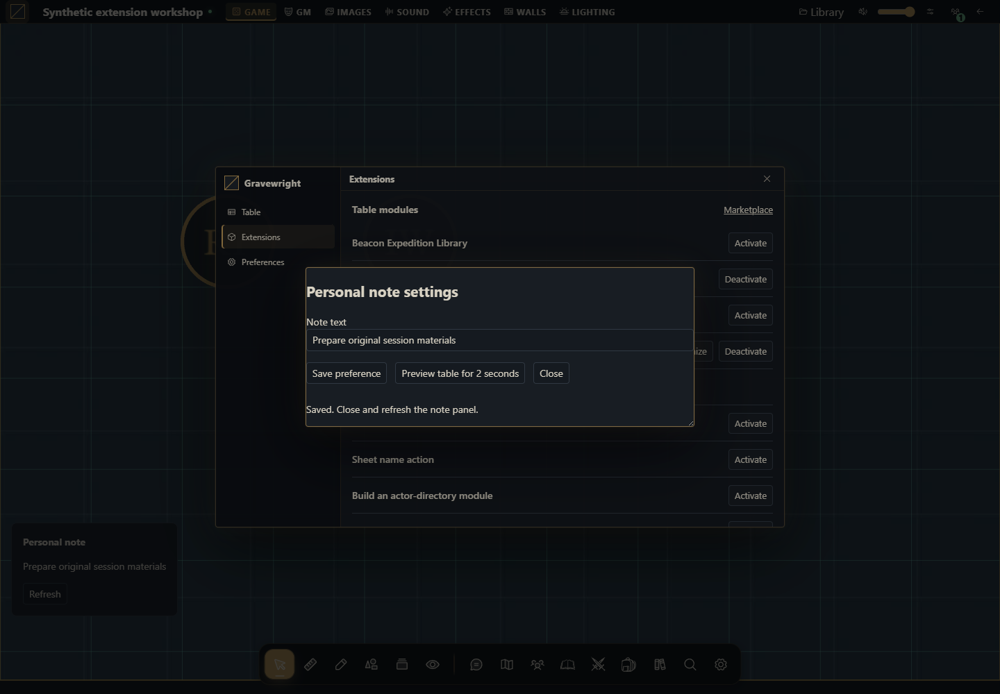

Criar formulários Customize e janelas nativas do módulo
Formulário completo com migração, CAS, traduções, ciclo de modal e montagem em preferences.


O que construir
Um módulo com nota pessoal na mesa, um painel na superfície preferences e um formulário real no botão Customize da lista de extensões. A configuração usa storage.user, então cada conta em cada campanha mantém sua própria nota. O módulo inclui migração explícita do formato antigo string para schema:1 e bloqueia formatos desconhecidos.
1. Crie o projeto e leia os dois arquivos de JavaScript
Crie a pasta personal-note. Baixe o ZIP completo ou salve os arquivos da seção final. main.mjs cuida das montagens, tradução e modal; settings.mjs implementa leitura/migração/gravação. Dados de jogo não são alterados.
2. Empacote e instale
Na pasta do projeto, execute:
python -m zipfile -c ../personal-note-1.0.0.zip manifest.json main.mjs settings.mjs styles.css LICENSE.txtNo Linux/macOS use python3. Instale como proprietário por Inside → Módulos → Instalar módulo → Instalar de ZIP. Abra campanha como GM e selecione Gravewright → Extensions → Activate em Personal note workshop 1.0.0. Teste um módulo de demonstração por vez para os painéis flutuantes não ocuparem o mesmo lugar.
3. Abra Customize e salve uma preferência
Em Gravewright → Extensions, clique Customize ao lado de Personal note workshop. O runtime exibe esse botão porque o objeto exportado implementa customize(context).
O campo Note text carrega a sua preferência atual. Digite “Organizar os materiais da sessão” e clique Save preference.
Espere a mensagem Saved. Feche por Close e clique Refresh no painel da nota. O novo texto aparece.
Saia e volte à campanha; o valor continua salvo. Entre como jogador e escolha outro texto: uma conta não sobrescreve a outra.
Abra Preferences no menu da mesa; a montagem preferences mostra o mesmo valor, com ação de atualização. Ela não altera preferências internas do host.
4. Entenda o modal e seu fechamento
api.ui.openModal recebe section com nome acessível. Ele gerencia foco, fundo e Escape. Enquanto há gravação, o formulário bloqueia os botões e canClose impede Escape. gravewright:sheet-flush também participa da gravação pendente. Desativação aborta a montagem e libera o modal.
Preview table for 2 seconds chama suspend, libera a visão da mesa e depois resume. O timer é cancelado em onDispose. Para um seletor real de mapa, substitua apenas esse intervalo pelo mecanismo de seleção que o contrato efetivamente suporta; não presuma uma API de seleção inexistente.
5. Evolua seus dados sem perder preferências
settings.mjs aceita chave ausente, string antiga e objeto schema:1. Migração é feita em memória; o valor só muda no servidor quando você clica Save preference. O spread preserva campos adicionais do formato aceito. Um schema desconhecido bloqueia a edição, em vez de apagar dados. get fornece a revisão CAS usada em set.
Abra o formulário em duas abas. Salve na primeira e tente salvar a segunda. A segunda recebe conflict, recarrega a preferência atual e exige revisão. Não há repetição forçada. Alterações no editor ficam locais até o botão Save; feche sem salvar para descartá-las.
6. Código completo para adaptar
manifest.json
{
"id": "example.personal-note",
"name": "Personal note workshop",
"version": "1.0.0",
"sdk": {
"requires": ">=1.0.0 <2.0.0",
"tested": "1.0.0"
},
"entry": "main.mjs",
"description": "A real Customize form, personal settings migration and translated live panel.",
"author": "Gravewright documentation",
"license": "MIT"
}main.mjs
import {load,save} from './settings.mjs';
export default {
start({styles,i18n}){
styles.use('styles.css');
i18n.register({en:{title:'Personal note',refresh:'Refresh'},'pt-BR':{title:'Nota pessoal',refresh:'Atualizar'},es:{title:'Nota personal',refresh:'Actualizar'}});
},
register({register}){
register('table.interface',ctx=>this.mount(ctx,true));
register('preferences',ctx=>this.mount(ctx,false));
},
async mount({root,api,storage,signal,onDispose},floating){
const doc=root.ownerDocument,panel=doc.createElement('aside');
panel.className='personal-note'+(floating?' personal-note--floating':'');
const title=doc.createElement('strong'),text=doc.createElement('p'),refresh=doc.createElement('button');
title.textContent=api.i18n.t('title');refresh.type='button';refresh.textContent=api.i18n.t('refresh');
panel.append(title,text,refresh);root.append(panel);
let generation=0;
async function read(){
const ticket=++generation;refresh.disabled=true;
try {const current=await load(storage);if(!signal.aborted&&ticket===generation)text.textContent=current.value.label;}
catch(error){if(!signal.aborted&&ticket===generation)text.textContent=error.code||error.message;}
finally{if(!signal.aborted&&ticket===generation)refresh.disabled=false;}
}
refresh.addEventListener('click',()=>void read(),{signal});
onDispose(()=>{generation++;panel.remove();});await read();
},
async customize({api,storage,signal,onDispose}){
const panel=document.createElement('section');panel.className='personal-note-settings';
panel.setAttribute('role','dialog');panel.setAttribute('aria-modal','true');panel.setAttribute('aria-label','Personal note settings');
const heading=document.createElement('h2');heading.textContent='Personal note settings';
const form=document.createElement('form'),label=document.createElement('label');label.textContent='Note text';
const input=document.createElement('input');input.maxLength=120;label.append(input);
const submit=document.createElement('button');submit.type='submit';submit.textContent='Save preference';
const preview=document.createElement('button');preview.type='button';preview.textContent='Preview table for 2 seconds';
const close=document.createElement('button');close.type='button';close.textContent='Close';
const status=document.createElement('p');status.setAttribute('role','status');
form.append(label,submit,preview,close,status);panel.append(heading,form);
let current,pending,timer;
function enabled(value){input.disabled=!value;submit.disabled=!value;preview.disabled=!value;close.disabled=!value;}
enabled(false);
const modal=api.ui.openModal(panel,{canClose:()=>!pending});
async function refresh(){current=await load(storage);if(!signal.aborted)input.value=current.value.label;}
panel.addEventListener('gravewright:sheet-flush',event=>{if(pending)event.detail.waitUntil(pending);},{signal});
form.addEventListener('submit',event=>{
event.preventDefault();if(pending||!current)return;enabled(false);
pending=(async()=>{
try{await save(storage,current,input.value);await refresh();if(!signal.aborted)status.textContent='Saved. Close and refresh the note panel.';}
catch(error){
if(!signal.aborted){
if(error.code==='conflict'){await refresh();status.textContent='Conflict: current server preference loaded. Review before saving again.';}
else status.textContent=error.code||error.message;
}
throw error;
}finally{pending=undefined;if(!signal.aborted)enabled(true);}
})();void pending.catch(()=>{});
},{signal});
preview.addEventListener('click',()=>{
modal.suspend();clearTimeout(timer);
timer=setTimeout(()=>{if(!signal.aborted)modal.resume();},2000);
},{signal});
close.addEventListener('click',()=>void modal.close(),{signal});
onDispose(()=>{clearTimeout(timer);void modal.close();});
try{await refresh();if(!signal.aborted)enabled(true);}
catch(error){if(!signal.aborted){status.textContent=error.code||error.message;close.disabled=false;}}
},
stop(){}
};settings.mjs
export const key='panel-preferences';
export function migrate(value){
if(value===null || value===undefined)return {schema:1,label:'My campaign note'};
if(typeof value==='string')return {schema:1,label:value};
if(value?.schema===1 && typeof value.label==='string')return {...value};
throw new Error('Unsupported preference schema. Export/migrate before saving.');
}
export async function load(storage){
const current=await storage.user.get(key);
return {value:migrate(current?.value),revision:current?.revision??null};
}
export async function save(storage,current,label){
if(typeof label!=='string' || !label.trim() || label.length>120)throw new Error('Enter 1–120 characters');
return storage.user.set(key,{...current.value,schema:1,label:label.trim()},{expectedRevision:current.revision});
}styles.css
.gw-module-root[data-module-id="example.personal-note"] .personal-note { padding: var(--space-4); font-size: 14px; }
.gw-module-root[data-module-id="example.personal-note"] .personal-note--floating { position: fixed; left: 16px; bottom: 112px; z-index: 10; max-width: min(340px, calc(100vw - 32px)); background: var(--surface); color: var(--text); border: 1px solid var(--border); border-radius: var(--radius-md); pointer-events: auto; }
.personal-note-settings { width: min(520px, calc(100vw - 48px)); padding: var(--space-5); font-size: 14px; }
.personal-note-settings label { display: block; margin-bottom: var(--space-4); }
.personal-note-settings input { width: 100%; display: block; }
.personal-note-settings button { margin-right: var(--space-3); margin-bottom: var(--space-3); }LICENSE.txt
MIT License
Copyright (c) 2026 Gravewright contributors
Permission is hereby granted, free of charge, to any person obtaining a copy
of this software and associated documentation files (the "Software"), to deal
in the Software without restriction, including without limitation the rights
to use, copy, modify, merge, publish, distribute, sublicense, and/or sell
copies of the Software, and to permit persons to whom the Software is
furnished to do so, subject to the following conditions:
The above copyright notice and this permission notice shall be included in all
copies or substantial portions of the Software.
THE SOFTWARE IS PROVIDED "AS IS", WITHOUT WARRANTY OF ANY KIND, EXPRESS OR
IMPLIED, INCLUDING BUT NOT LIMITED TO THE WARRANTIES OF MERCHANTABILITY,
FITNESS FOR A PARTICULAR PURPOSE AND NONINFRINGEMENT. IN NO EVENT SHALL THE
AUTHORS OR COPYRIGHT HOLDERS BE LIABLE FOR ANY CLAIM, DAMAGES OR OTHER
LIABILITY, WHETHER IN AN ACTION OF CONTRACT, TORT OR OTHERWISE, ARISING FROM,
OUT OF OR IN CONNECTION WITH THE SOFTWARE OR THE USE OR OTHER DEALINGS IN THE
SOFTWARE.Testes práticos
Teste schema antigo, schema desconhecido, duas abas, outro jogador, conta em outra campanha, rede interrompida e desativação durante leitura/salvamento. A nota usa textContent, então texto com HTML é exibido como texto. Catálogos en/pt-BR/es usam o idioma explícito da conta e descartam suas inscrições com a ativação.
Como usar a IA para personalização
Adapte Personal note workshop para [preferência concreta] no Gravewright 0.3.0. Preserve o callback customize, a montagem preferences, CAS e migração de schema. Use modal nativo e rótulos localizados; não edite opções internas do VTT. Entregue arquivos completos e teste duas abas, jogador, fechamento e atualização de versão.